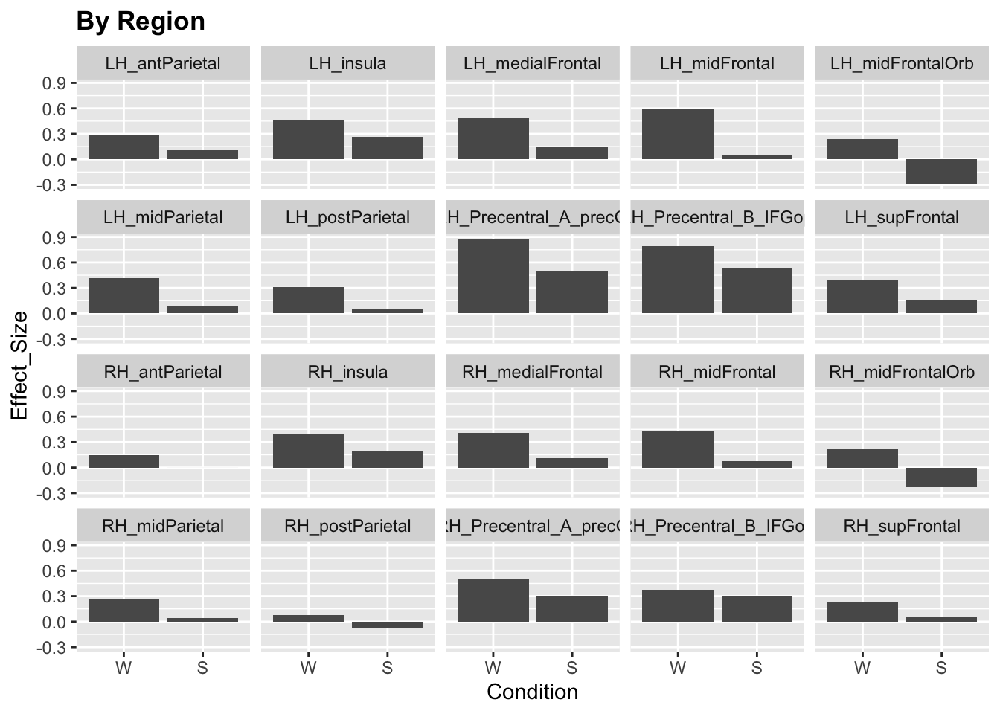
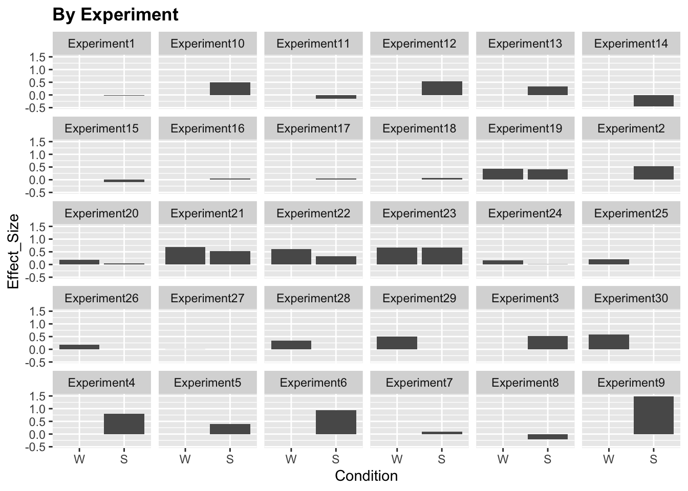

2 Meet the data
2.1 Setting up the environment
We will need the following packages:
tidyverse: this is actually a collection of packages that we will use for dataframe manipulations and plotting the datalme4: this is the package that provides us with tools for running the mixed effects model (such as thelmerfunction)lmerTest: this is an addon to thelme4package that will estimate significance (p values) for each term
2.2 The data
We will use data from the paper by Diachek et al (2020): “The domain-general multiple demand (MD) network does not support core aspects of language comprehension: a large-scale fMRI investigation”.
In this work, the authors examined responses within 2 networks of interest - multiple demand and language - to sentence reading & word reading conditions across many different experiments. Each network contains multiple regions of interest (ROIs), 20 for MD and 6 for language; the MD regions are located in both hemispheres, whereas the language ROIs are only located in the left hemisphere.
The data can be downloaded from OSF; a csv version we use in this tutorial is available in the tutorial’s Github repo.
Let’s load and examine the data. In this tutorial, we will only be looking at the MD system.
# load data
data = read.csv('data/Diachek2020.csv', header=TRUE)
data = subset(data, (System=="MD"))
print(str(data))## 'data.frame': 20960 obs. of 9 variables:
## $ Experiment : Factor w/ 30 levels "Experiment1",..: 1 1 1 1 1 1 1 1 1 1 ...
## $ System : Factor w/ 2 levels "language","MD": 2 2 2 2 2 2 2 2 2 2 ...
## $ Region : Factor w/ 30 levels "LAntTemp","LH_antParietal",..: 8 8 8 8 8 8 8 8 8 8 ...
## $ SubjectID : Factor w/ 679 levels "007_KAN_parametric_07",..: 2 10 11 12 56 74 96 107 111 169 ...
## $ Condition : Factor w/ 2 levels "S","W": 1 1 1 1 1 1 1 1 1 1 ...
## $ Hemisphere : Factor w/ 2 levels "L","R": 1 1 1 1 1 1 1 1 1 1 ...
## $ Effect_Size: num 0.602 -0.303 -0.369 0.361 -0.194 ...
## $ Modality : Factor w/ 2 levels "auditory","visual": 2 2 2 2 2 2 2 2 2 2 ...
## $ Task : Factor w/ 2 levels "passive","task": 1 1 1 1 1 1 1 1 1 1 ...
## NULLYou want to make sure that all your categorical variables are specified as factors. Generally, R will default to treating numbers as type “numeric” and strings as factors, but it might help to be explicit:
# COMMON MISTAKE: if you use numeric IDs (for participants, experiments, etc), they will be treated as numeric
# (i.e. experiment 2 > experiment 1). This is usually not what we want, so we can explicitly tell R that we want to treat a certain variable as a factor.
data$Experiment = factor(data$Experiment)You can also use the factor command to specify the order of the different values (“levels”) that a given variable can take. If you don’t specify the order, the levels will be ordered alphabetically.
Let’s take a look at our data!
ggplot(data)+
stat_summary(aes(x=Condition, y=Effect_Size), fun.y="mean", geom="col")+
facet_wrap(~Region, ncol = 5)+
labs(title="By Region")+
theme(legend.position = "none",
plot.title=element_text(face="bold"))
ggplot(data)+
stat_summary(aes(x=Condition, y=Effect_Size), fun.y="mean", geom="col")+
facet_wrap(~Experiment, ncol = 6)+
labs(title="By Experiment")+
theme(legend.position = "none",
plot.title=element_text(face="bold"))
We see that the responses vary quite a lot by brain region and experiment. Moreover, some experiments only include a sentence (S) or word (W) condition but not both. For simplicity, let’s only include a subset of experiments (19-24)
for (ii in 19:24) {
x = subset(data, Experiment == paste("Experiment", as.character(ii), sep=""))
if (ii==19){
data.md.red = x
} else {
data.md.red = rbind(data.md.red,x)
}
}
summary(data.md.red)## Experiment System Region
## Experiment23:1320 language: 0 LH_antParietal : 236
## Experiment24: 840 MD :4720 LH_insula : 236
## Experiment19: 680 LH_medialFrontal: 236
## Experiment20: 640 LH_midFrontal : 236
## Experiment21: 640 LH_midFrontalOrb: 236
## Experiment22: 600 LH_midParietal : 236
## (Other) : 0 (Other) :3304
## SubjectID Condition Hemisphere Effect_Size
## 365_FED_20170510a_3T2: 80 W:2360 L:2360 Min. :-2.845794
## 498_FED_20170510b_3T2: 80 S:2360 R:2360 1st Qu.:-0.000482
## 541_FED_20170523d_3T2: 80 Median : 0.371629
## 007_KAN_parametric_07: 40 Mean : 0.418242
## 018_FED_20151202b_3T1: 40 3rd Qu.: 0.790246
## 018_FED_20151203a_3T1: 40 Max. : 4.048679
## (Other) :4360
## Modality Task
## auditory: 0 passive:1480
## visual :4720 task :3240
##
##
##
##
## Now we’re ready to analyze our data!